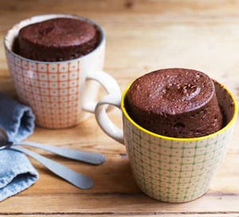

Microwave Mug Cake

An easy way to do a chocolate cake using the microwave.
Ingredients
- 4 tbsp of self-raising flour
- 4 tbsp of caster sugar
- 2 tbsp of cocoa powder
- 1 medium egg
- 3 tbsp of milk
- 3 tbsp of vegetable oil
- a few drops of vanilla essence or other essence
- 2 tbsp of chocolate chips, nuts or raisins (optional)
Steps
- Pick the largest mug you have (to stop it overflowing in the microwave), add the self-raising flour, caster sugarand cocoa powder and mix it.
- Add the egg and mix in as much as you can.
- Add the milk, oil, essence drops and mix until smooth.
- (Optional) Add the chocolate chips, nuts or raisins and mix again.
- Centre your mug in the middle of the microwave oven and cook on High for 1½ -2 mins, or until it has stopped rising and is firm to the touch